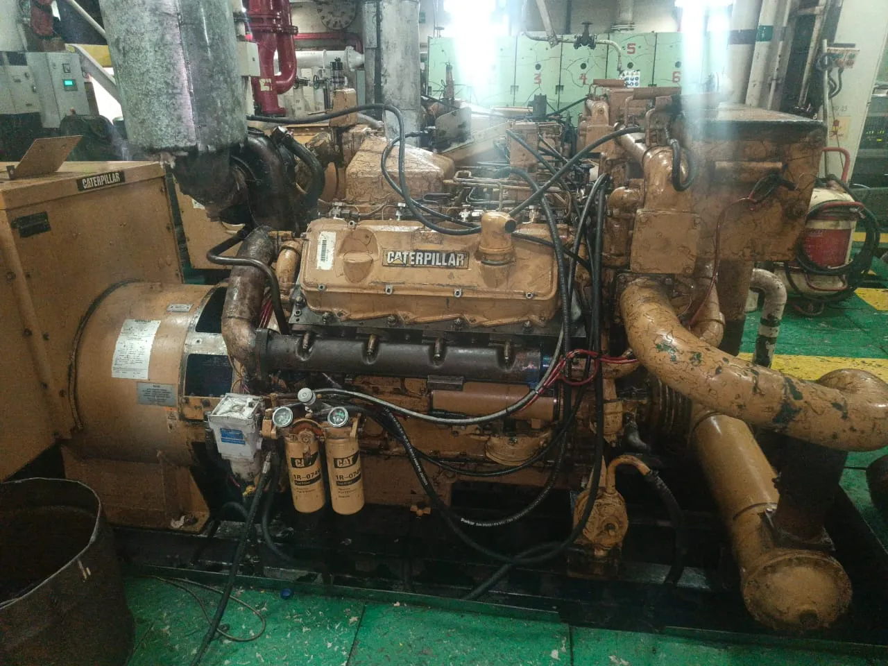
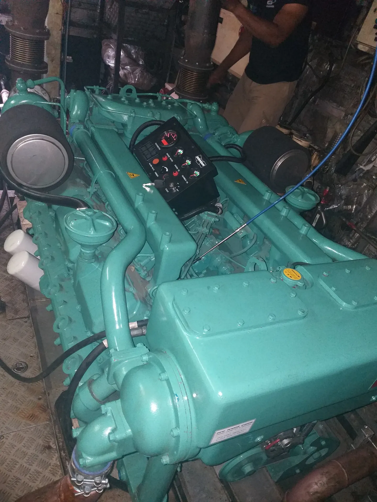

Our Work
A selection of completed marine and engineering projects demonstrating our technical capabilities and service delivery.

Auxiliary Generator Overhaul - CAT 3408 (Marine Vessel)
A full overhaul was carried out on a CAT 3408 marine engine aboard a vessel as part of scheduled maintenance to restore performance and ensure reliable operation.
View Project →
Installation of DOOSAN 4V 2222TIM in MV Ahuva C&I Vessel at WAS Shipyard
The scope of work included full servicing and overhaul of the main engine covering mechanical and electrical system inspection, installation works, and final load testing to ensure proper performance and reliable operation before commissioning.
View Project →
Complete Overhaul of CAT C32 ACERT Marine Engine in our workshop
A complete overhaul of a CAT C32 ACERT marine engine was carried out in our workshop, including inspection, servicing, and replacement of critical components to restore reliable engine performance.
View Project →Discuss Your Project Requirements
Contact us to learn more about our capabilities or discuss your vessel maintenance and technical service needs.
Get in Touch